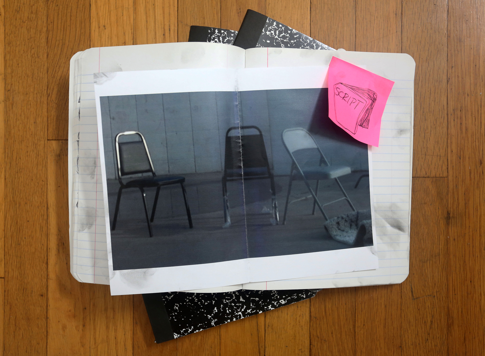
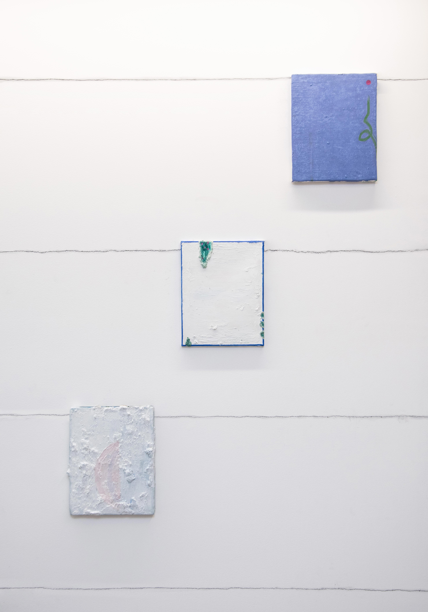

Zoé Blue M

Nathaniel Whitfield
V Haddad

Yoab Vera
Sharif Farrag
DISCIPLINE
GALLERIES
ARTISTS

![Two cartoonish female figures stand in the center of this painting. The one on the left is holding the other in her arms, one arm draped above the others shoulder and the other arm coming up from under the opposite arm, where her two hands interlace their fingers. The other figure is nestling her head into the others shoulder with her hands behind her back. The second figure's right hand is cutting a hospital band off her left wrist. The embracing figure is wearing a green and blue striped long sleeve shirt with an orange polka-dotted dress over it and pink striped fuzzy socks. The second figure is wearing a purple patterned shirt with navy blue pin-striped pants and purple sneakers. They are standing in an abstracted pool of water surrounded by a plastic orange construction fence. The atmosphere is green and salmon-pink/orange, there are branches from orange trees coming out from the right and left frame, surrounding the two figures. There are white flowers blooming sparsely throughout the tree branches, their petals also floating throughout the space.](images/Passionate-Attitudes_SplitFin_ZBM.jpg)